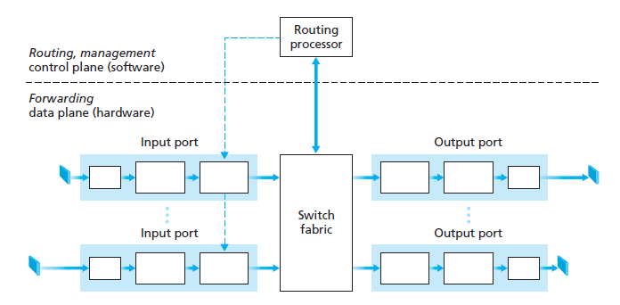

| Routing processor | Input Port | Switch fabric | output port |
| Determines the best path through the network | Entry point for incoming data packets | Moves data from input port to reach output port | Exit point of the router |
| Uses Protocols such as OSPF, RIP, and BGP | Performs queuing delay when datagram entry is than the rate of the switch fabic | Does not do any routing | Buffering occurs if traffic through output port exceeds transmission rate |
| The protocols employ routing algorithms - Belmann-Ford (RIP), Dijkstra, and Path Vector (BGP) | Data passes through the physical layer and receives signals at bit-level | Three Types of Switching Fabric architectures: Memory, Bus, Interconnection Network | Packet Scheduling occurs if buffer is full such as FIFO, Priority, Round-Robin, and Weighted fair queuing |
| Stores the Routing results in a Routing Table | Continues to the link layer that confirms datagram has a valid Ethernet Frame | Similar to a highway that vehicles transport through to their exits | the extracted IP address is re-encapsulated in a new Ethernet Frame |
| Routing table creates a forwarding table for routers to reference when determining destination output ports | The Network Layer processes the Ethernet frame to examine and extract the destination IP Address | The data is converted back to a physical signal and sent out to the next network link |